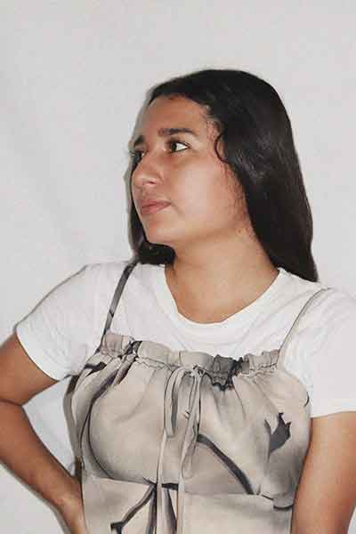

Martha Elena Galindo Rueda
 Es una estudihambre con muchos sueños, mantiene la inclinación de desarrollo en áreas relacionado a Branding, Diseño publicitario, Fotografía/Video, Infografias, procesos gráficos como Serigrafia y estampados artesanales, de igual manera posee valores como el optimismo, empatía, lealtad, y compromiso siendo respetuosa, honesta, amigable con habilidades de atención al cliente, redes sociales, y con ganas de seguir aprendiendo mucho más y así compartir conocimiento con otras personas.
Le encanta ver atardeceres, montañas, lagos, cascadas, capturar el cielo y más si se trata de estrellas y la luna, no es muy común que vea los amaneceres, pero, cuando tiene la oportunidad parece la loquita del centro con tanta emoción, disfruta cada detalle, cada cosa que puede resultar insignificante, ama los animales, le gusta viajar y más si se trata de pueblitos, porque es nacida en la costa de Guerrero y le trae recuerdos a su mente, se considera como el Mar, a veces marea alta y a veces marea baja, es decir, aveces triste y furiosa pero otras veces feliz jiji. Ama con todas sus fuerzas bailar, entre ritmos latinos su favorito es bachata pero lleva en la sangre lo costeña y le encanta zapatear, las chilenas en su vida no pueden faltar, ¡uuuf! ¿Qué sí contenta la pone?... se viaja a otro mundo sin pensar. Le fascina cantar, no tiene un tono angelical pero la experiencia nadie se la puede quitar, es agradecida con Dios y la vida por estar donde se encuentra ahora y siempre desea que todas las personitas tengan una vida muy buena y bonita pese a tantos problemas que hay en el mundo. Les dejo en youtube una de sus canciones favoritas que la mantiene en paz y dichosa.